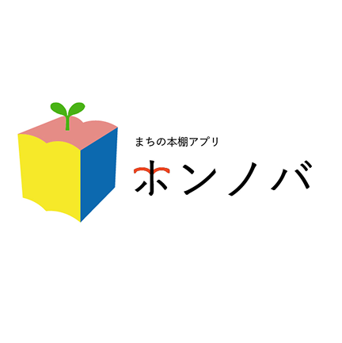
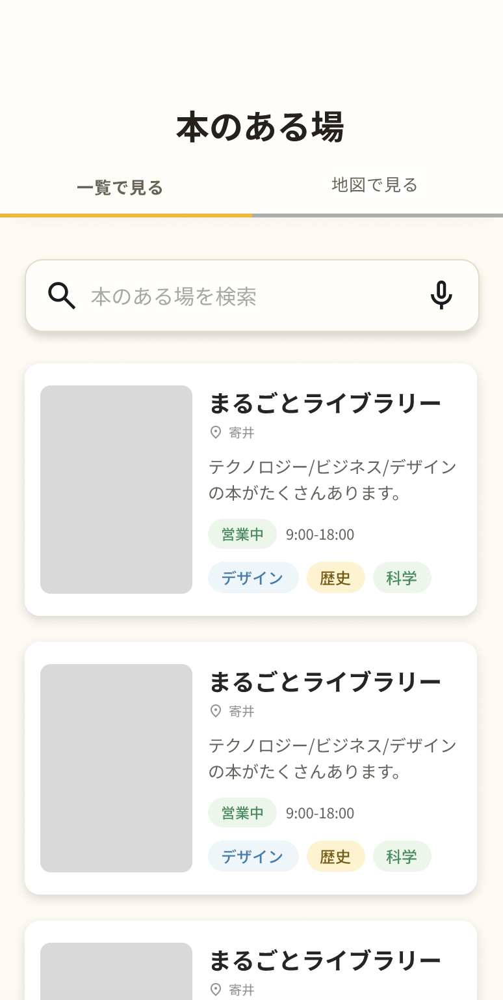
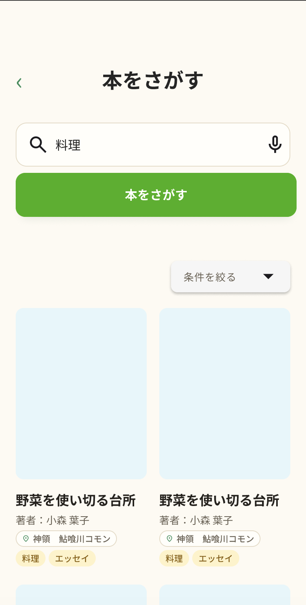
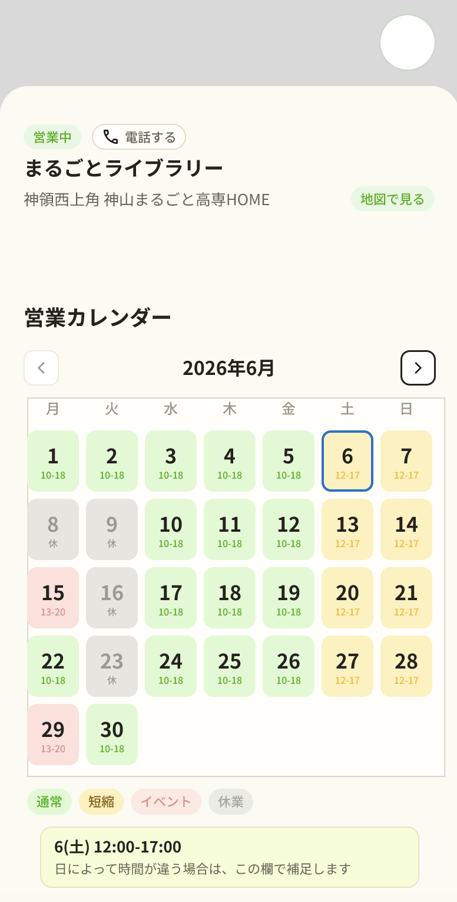
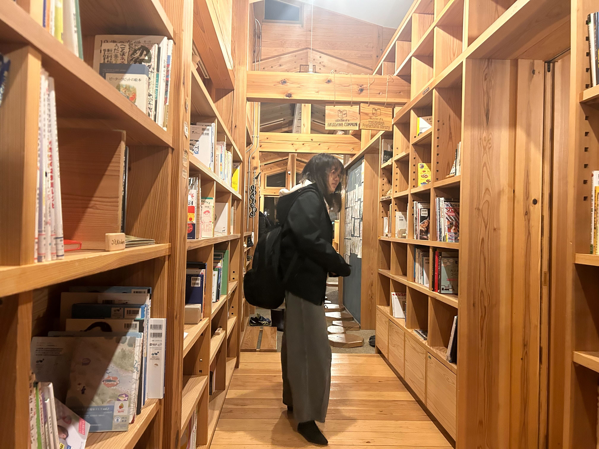
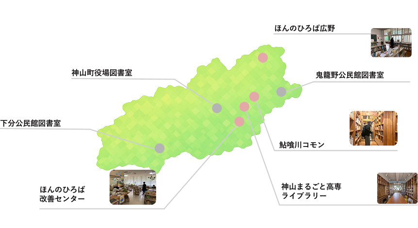

Learning
この制作を通して、サービスは画面だけでなく、実際の場所や人の行動とつながっていることを学びました。フィールドで得た声をUIに反映することで、より使いやすい体験に近づけられると感じました。

2023年ーいままで
企画 / 要件整理 / UI・UX設計 / Web制作
/ リサーチ / 運用改善
神山町に点在する「本のある場」と、そこにある本を紹介し、町民や来訪者がホンノバをきっかけに、本と本のある場所に出会えるようにするWebアプリを制作。
神山町には公共図書館がありません。図書館を新しく設置・維持するには大きな費用がかかるため、小さな町にとって公共図書館を持ち続けることは簡単ではないからです。 一方で、町内を見渡すと、私設の本棚や古本を共有する場所など、本に触れられる小さな場が点在しています。つまり「本がない」のではなく、「本のある場所が見えにくい」ことが課題なのではないかと考えました。(実際に住民からは「どこにどんな本があるのか分からない」という声があり、場の管理者側も、蔵書管理や情報発信に手間がかかり、住民への周知まで十分に手が回らない状況がありました。)そこで、町内に点在する“本のある場”を可視化し、本と場所、人が出会うきっかけをつくるWebアプリとして、ホンノバを制作しました。
ユーザー(町民)
本のある場所や、まちの中の本棚を探しづらい。
本のある場の管理者
本棚の存在や、置いている本の魅力を届けにくい。
自治体
既にある地域資源が十分に活かされていない。
ホンノバでは、本を「借りるもの」だけではなく、
場所や人と出会うきっかけとして捉えています。
町の中に点在する小さな本棚や本のある場所をつなぐことで、
図書館がない町でも、本に触れる機会を増やすことができる。
本を探すことが、町を歩く理由になる。
本棚を知ることが、新しい場所を訪れるきっかけになる。
そんな体験をつくることを目指しています。
Service Design




まちにある本棚や、本棚に置かれている本の存在を知る。
気になる本棚や本を探し、行きたい場所を見つける。
本棚の情報、置かれている本、場所の雰囲気を見る。
実際にその場所へ行き、本や本棚に触れる。
本をきっかけに、場所や人との新しい接点を見つける。

神山町にある本棚を調査し、本がある場所や本棚に関わる人の声を集めました。
Webアプリとして見せ方を設計し、検索や本棚一覧などの導線を整理しました。
UI改善やフィールドテストを通して、使いやすさと情報の伝わり方を見直しました。
神山町に公共図書館がないことや、町内に本のある場が点在していることから、何を課題として捉えるべきかを整理しました。
利用者が本のある場を探すために必要な情報や、運営者が無理なく更新するために必要な情報を洗い出しました。
初めて使う人がサービスの目的を理解し、地図や一覧から自然に場所を探せるよう、情報設計や画面構成を検討しています。
Webアプリの画面制作や、掲載情報の整理に関わりました。
町内の本のある場を調査し、掲載情報や実証実験に向けた調整を行っています。
実証実験に向けて、情報更新の仕組みや、継続的に使われるための運用方法を検討しています。
この制作を通して、サービスは画面だけでなく、実際の場所や人の行動とつながっていることを学びました。フィールドで得た声をUIに反映することで、より使いやすい体験に近づけられると感じました。
今後は、本棚の情報をより見つけやすくし、まちの中で本をきっかけにした出会いが生まれるよう、検索機能や投稿機能、イベントとの連携をさらに改善していきたいです。